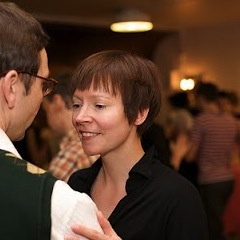
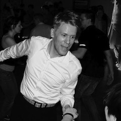
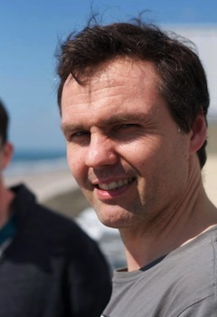

What is the teaching like at Swing Spring?
Swing Spring 2013 is a Lindy Hop camp, meaning that Lindy Hop will be taught daily. In addition to Lindy, we will have elective classes and bonbons on other dances or subjects, so that they promote the general idea of the camp.
For the teaching on Swing Spring last year, we tried something new that has never been done on a swing dance camp in Finland before (to our knowledge): during a weekend, all teachers put their heads together to figure out general guidelines and themes for the teaching at the camp, on the basis of the current Finnish (and international) swing scene. Therefore, while all the classes are different from each other, they create a whole. The idea is to learn by doing and to understand new things about dancing, while dancing.
There will be approximately five hours of classes every day, though we will have more classes the first three days. On Sunday, the schedule will be shorter. A more detailed schedule will be published before the camp.
Teachers
 Riikka Antikainen has been a happy Lindy Hopper since 2006. Over the years, along came Authentic Jazz, Balboa, teaching and other sorts of swing-connected craziness both in Finland and abroad. Today, Riikka teaches lindy hop through Rock'n'Swing Club Comets ry in Helsinki. She loves social dancing, DJing and teaching people to dance in rhythm, together.
Riikka Antikainen has been a happy Lindy Hopper since 2006. Over the years, along came Authentic Jazz, Balboa, teaching and other sorts of swing-connected craziness both in Finland and abroad. Today, Riikka teaches lindy hop through Rock'n'Swing Club Comets ry in Helsinki. She loves social dancing, DJing and teaching people to dance in rhythm, together.
 Jani Antola has been dancing partner dances for a long time and his passion is to keep improving the basis of his dancing. With the basics in order, it is easier to apply them to new things. Jani has competed mostly in Boogie Woogie both in Finland and abroad, but has lately concentrated mostly on Lindy Hop. Jani practices with discipline and his classes are filled with fun, improvement and useful tools for your dancing!
Jani Antola has been dancing partner dances for a long time and his passion is to keep improving the basis of his dancing. With the basics in order, it is easier to apply them to new things. Jani has competed mostly in Boogie Woogie both in Finland and abroad, but has lately concentrated mostly on Lindy Hop. Jani practices with discipline and his classes are filled with fun, improvement and useful tools for your dancing!
 Anni Heikkinen is a swing dance teacher from Oulu. Her full-time job is teaching future dance teacher at the Oulu University of Applied Sciences. For Anni, swing music and Lindy Hop are unending sources of inspiration and self expression.
Anni Heikkinen is a swing dance teacher from Oulu. Her full-time job is teaching future dance teacher at the Oulu University of Applied Sciences. For Anni, swing music and Lindy Hop are unending sources of inspiration and self expression.
Topias Kaitila first tried Rock’n’Swing dancing at Swing Team, Tampere in 2003. Since then, he’s been actively training and participating in workshops both in Finland and abroad. Topias has also competed almost from the beginning and his achievements include first place in Lindy Hop and second place in Fusku in the Finnish Championships in 2010. For Topias, dancing has become a way of life and he teaches mostly in Turku.
 Margo Kangasniemi's love of old American music got him into dance class a while back and nowadays he is an active swing dancer, teacher and organiser who also takes part in workshops in Finland and abroad. Sometimes he even ends up performing Lindy or Balboa! Lately, he has been teaching in Helsinki. In his teaching, Margo emphasizes clarity and the basics: motivation, creativity and natural movement. “A good atmosphere creates good stuff!”
Margo Kangasniemi's love of old American music got him into dance class a while back and nowadays he is an active swing dancer, teacher and organiser who also takes part in workshops in Finland and abroad. Sometimes he even ends up performing Lindy or Balboa! Lately, he has been teaching in Helsinki. In his teaching, Margo emphasizes clarity and the basics: motivation, creativity and natural movement. “A good atmosphere creates good stuff!”

During the 90′s, Minna Marttila had to take a break from Judo and during that time fell in love with swing dancing. And she never looked back. Her journey in the swing world started with Boogie Woogie soon followed by Lindy Hop and later on by the elegant but spicy Balboa. She is the proud mother of the eight years old “Puistotanssit – Lindy in the Park” in her home town Helsinki. Promoting social dancing is close to her heart.
 Mikko Multanen fell in love with Lindy Hop 2005 and a year later also with Balboa and Authentic Jazz. 2006 was also the year he started traveling around the world to participate in different workshops and camps. He has taught Lindy Hop, Balboa and Authentic Jazz since 2007, mainly in Helsinki but also in many events around Finland. Mikko loves the freedom and happiness of Lindy Hop and enjoys teaching people about rhythm and connection.
Mikko Multanen fell in love with Lindy Hop 2005 and a year later also with Balboa and Authentic Jazz. 2006 was also the year he started traveling around the world to participate in different workshops and camps. He has taught Lindy Hop, Balboa and Authentic Jazz since 2007, mainly in Helsinki but also in many events around Finland. Mikko loves the freedom and happiness of Lindy Hop and enjoys teaching people about rhythm and connection.

Aleksis Nokso-Koivisto is one of the most well-known Lindy Hoppers in Finland. Since 1995, he’s tried most Rock’n’Swing dances and other dances as well, but his dancing and teaching is also inspired by music and other performing arts. His classes are above all physical, because the only way to learn to dance is to dance. However, this must be done with thought: deliberate practice is the only way to mastery.
 Hanna-Reetta Nokso-Koivisto has danced many dances during her dancing career of over ten years, but the versatile and challenging Lindy Hop has proved to be her favourite. Every dance is a unique experience to be lived in the moment. As a life-long learner, Hanna-Reetta has an unending thirst for challenging herself in classes both home and abroad, as she believes one can always learn more! In dancing and teaching, she believes in the “holy trinity” between the dance partners and the music. Each of the three have an important role and everything affects everything. Partner communication begins with the understanding and control of one’s own body.
Hanna-Reetta Nokso-Koivisto has danced many dances during her dancing career of over ten years, but the versatile and challenging Lindy Hop has proved to be her favourite. Every dance is a unique experience to be lived in the moment. As a life-long learner, Hanna-Reetta has an unending thirst for challenging herself in classes both home and abroad, as she believes one can always learn more! In dancing and teaching, she believes in the “holy trinity” between the dance partners and the music. Each of the three have an important role and everything affects everything. Partner communication begins with the understanding and control of one’s own body.
A picture and text for Päivi Perttunen will be added soon.
 Heidi Pohjola started her dancing career with ballroom and latin dances in 1995 and she competed in them for well over ten years. Round 2000, she also found Finnish social dancing and Rock’n’Swing dances, in which she also wanted to compete, leading to three Finnish Lindy Hop championships. Nowadays, Heidi is mostly retired from competing, but she continues teaching and social dancing. This spring you can even spot her on TV, just check out Pakko tanssia (Got to Dance) on YLE TV2!
Heidi Pohjola started her dancing career with ballroom and latin dances in 1995 and she competed in them for well over ten years. Round 2000, she also found Finnish social dancing and Rock’n’Swing dances, in which she also wanted to compete, leading to three Finnish Lindy Hop championships. Nowadays, Heidi is mostly retired from competing, but she continues teaching and social dancing. This spring you can even spot her on TV, just check out Pakko tanssia (Got to Dance) on YLE TV2!

Saku Päivärinta started dancing in his “later years”, at the age of 35. After some Finnish social dancing, he found swing dances in 2007 and things got totally out of hand. Since then, he’s been taking classes and travelling to workshops first in Finland and then abroad. At the moment, Saku teaches Lindy Hop and Balboa mainly in Helsinki. Saku’s dance program also includes Tap dancing and Argentinian Tango. His trademarks are energetic dancing and a love for social dancing, but he sees himself doing more shows and choreographies in future.
Laura Robinson is a dancer, teacher, and organizer from Helsinki who loves the addictive joyfulness of swing dancing. She teaches Lindy Hop, Balboa, and even a bit of Blues. She likes to provide students with a nice balance of well-structured technical instruction and lighthearted creative experimentation.
 Terhi Vuovirta started dancing when she was a child. First she danced solo dances like Show Dance and Hiphop, but then quit dancing for several years. However, in 2002, Terhi found Boogie Woogie and even started teaching that same year. A couple of years later, she lost her heart to Lindy Hop. In addition to these, Terhi also dances West Coast Swing and Balboa. Terhi has participated in many workshops in Europe (eg. Sweden, Switzerland, Italy, Hungary) and she has even taught in the USA.
Terhi Vuovirta started dancing when she was a child. First she danced solo dances like Show Dance and Hiphop, but then quit dancing for several years. However, in 2002, Terhi found Boogie Woogie and even started teaching that same year. A couple of years later, she lost her heart to Lindy Hop. In addition to these, Terhi also dances West Coast Swing and Balboa. Terhi has participated in many workshops in Europe (eg. Sweden, Switzerland, Italy, Hungary) and she has even taught in the USA.